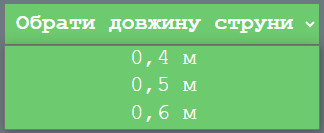
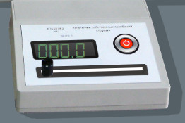
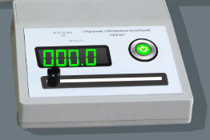
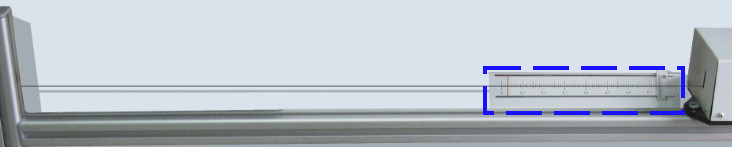
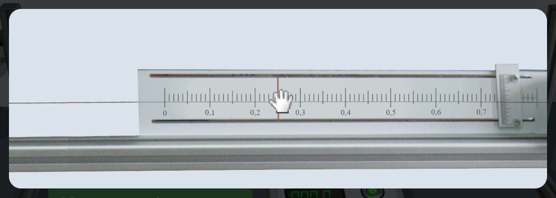
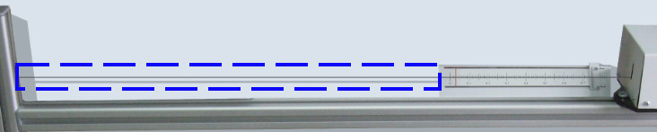
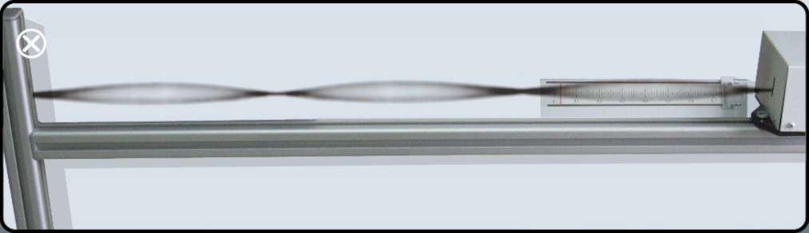

Довідка з виконання
лабораторної роботи
На цій сторінці описуються ключові моменти у виконанні віртуальної лабораторної роботи, які можуть викликати питання.
1. На екрані виконання Установка для вивчення власних коливань струни з двома елементами управління. Для початку виконання віртуальної лабораторної роботи необхідно обрати матеріал струни та її довжину
Зображення 1 - обрати матеріал струни  Зображення 2 - обрати довжину струниПотім увімкнути прилад за допомогою відповідної кнопки:
Зображення 3 - початок виконанняабо за допомогою кнопки на самій установці, яка у вимкненому стані червоного кольору, а у ввімкненому стані стає зеленого кольору:
 Зображення 4 - вимкнений стан  Зображення 5 - увімкнений стан2. Після увімкнення приладу обрати силу натягу. Для цього натискаємо на кнопку "Обрати силу натягу":
 Зображення 6 - кнопка "Обрати силу натягу"
Зображення 6 - кнопка "Обрати силу натягу"
або на кнопку на установці:
 Зображення 7 - кнопка "Обрати силу натягу" на установціОбрати силу натягу за допомогою червоного повзунка, перетягуючи його праворуч чи ліворуч:
 Зображення 8 - Вікно обирання сили натягу3. Для пергляду струни натискаємо кнопку "Подивитись на струну":
Зображення 9 - кнопка "Подивитись на струну"або кнопку на установці:
 Зображення 10 - кнопка "Подивитись на струну" на установціВідкривається вікно де відображаються коливання струни, відповідно зміні частоти на установці
 Зображення 11 - Вікно обирання сили натягу4. Змінюємо частоту коливання струни повзунком на генераторі коливань:
 Зображення 12 - коробка обирання частоти
Зображення 12 - коробка обирання частоти